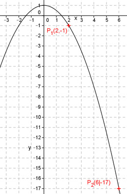
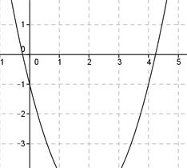
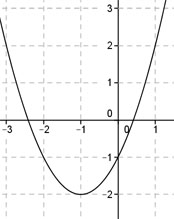
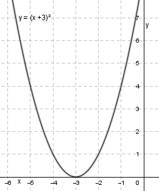
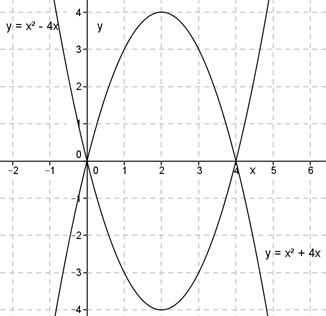
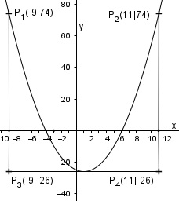
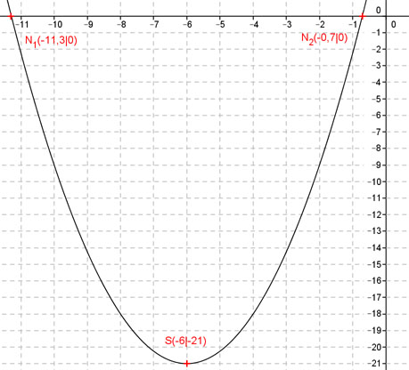

Wie löse ich Matheaufgaben?
Flächenberechnungen
Sie sehen ein gelbes Eingabefeld und die
Schalter: Prüfen und Lösung.
Tragen Sie Ihr Ergebnis ein, prüfen Sie es
oder starten Sie eine Lösung.
Aufgabe 45
Ein rechtwinkliges Dreieck hat eine Kathete von 3 cm und eine Hypotenuse von 6 cm? Wie groß ist seine Fläche?
Aufgabe 46
Ein gleichschenklig-rechtwinkliges Dreieck mit dem Schenkel a soll die gleiche Fläche haben wie ein gleichseitiges mit der Seite s. Drücken Sie s durch a aus.
s = * aAufgabe 47
Ein rechtwinkliges Dreieck mit der Höhe h = 3 cm
hat eine Fläche von
A = 12 cm².
Aufgabe 48
Wie groß ist die Fläche eines Dreiecks
mit a = 3 cm, b = 5 cm und
c = 4 cm?
Aufgabe 49
In einem gleichschenkligen Dreieck ist die Höhe so groß wiedie Basis und beträgt 8 cm. Wie groß ist seine Fläche und ein Schenkel?
Aufgabe 50
In einem Dreieck ist eine Seite = 5 cm, eine zweite = 3 cm und die Fläche = 5 cm2. Wie groß ist die dritte Seite?
Größere Möglichkeit = cmAufgabe 51
Ein gleichschenkliges Dreieck hat eine Höhe von 5 cm und einen Schenkel von 8 cm. Wie groß ist seine Fläche?
Aufgabe 52
Ein gleichschenkliges Dreieck hat eine Fläche von 10 cm2 und eine Grundseite von 4 cm. Wie groß ist die Höhe auf die Grundseite und ein Schenkel?
Höhe = cmAufgabe 53
Schenkel und Grundseite eines gleichschenkligen Dreiecks verhalten sich wie 2 : 1. Es hat eine Fläche von 6 cm². Wie groß ist ein Schenkel und die Grundseite?
Aufgabe 54
Ein gleichschenkliges Dreieck hat eine Fläche von 8 cm2 und einen Schenkel von 5 cm. Wie groß ist sein Inkreisradius?
Kleinerer = cmAufgabe 55
Ein gleichschenkliges Dreieck hat einen Umfang von 16 cm und eine Höhe auf die Grundseite von 4 cm. Wie groß sind die Fläche, die Länge eines Schenkels und die Grundseite?
Aufgabe 56
Wie groß sind für das gleichschenklige Dreieck der Schenkel a und die Strecke f?

a = cmAufgabe 57
Ein gleichschenkliges Dreieck hat eine Grundseite von 5 cm und Schenkel von 8,3 cm. Wie lang ist die Seitenhalbierende eines Schenkels?
Aufgabe 58
In welchem Verhältnis teilt die Seitenhalbierende eines Schenkels in einem gleichschenkligen Dreieck die entstehenden Flächen?

A1 : A2 =Aufgabe 59
Berechnen Sie b und c.

Aufgabe 60
Wie groß ist die Fläche des Profils?

A = mm2Aufgabe 61
Die Seite eines gleichseitigen Dreiecks ist 3 cm. Wie groß sind der Inkreis- und Umkreisradius?

Aufgabe 62
Berechnen Sie den Ankreisradius des gleich- seitigen Dreiecks,wenn eine Dreieckseite 4 cm lang ist.

ra = cmAufgabe 63
Die Seiten zweier gleichseitiger Dreiecke verhalten sich wie 2 : 3. Wie verhalten sich die Flächen?
Aufgabe 64
Ein gleichseitiges Dreieck hat einen Umfang von 15 cm. Wie groß sind seine Höhe und die Fläche?
A = cm²Aufgabe 65
Der Umfang eines Stahlprofils in Form eines gleichseitigen Dreiecks beträgt 26,4 cm. Wie groß ist seine Fläche?
Aufgabe 66
Eine Sechskantschraube hat eine Schlüsselweite von 21 mm. Wie groß ist ihr Eckmaß e?

e = mmAufgabe 67
Ein Mast ist 23,4 m hoch. Er wird von 3 Seilen mit einer Länge von 30 m gehalten. Deren Fußpunkte bilden ein gleichseitiges Dreieck. Wie weit sind die Fußpunkte voneinander entfernt?
zurück